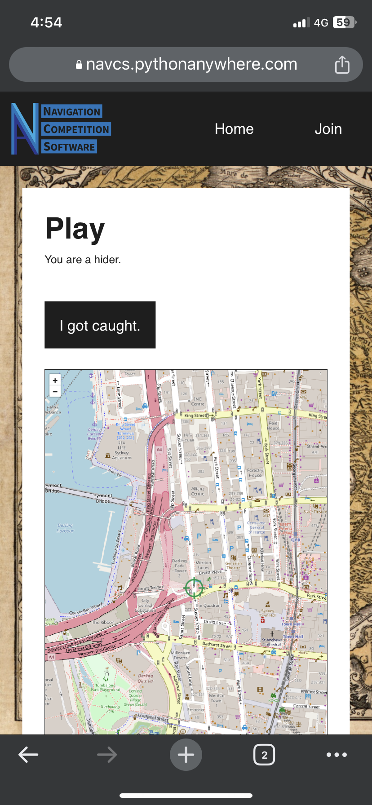

NavCS is live at https://navcs.pythonanywhere.com - check it out!
NavCS is an online system which facilitates real life navigation games. Think 'hide and seek' across an entire city. Users can go to the website (https://navcs.pythonanywhere.com), and create a game with the settings of their choice. Once created, the system will give them a game code which participants will use to log on to that particular game. Once the game starts the system will randomly assign targets and send each player the location of the player(s) they are chasing, while sending their location to their chaser(s). This alows navigation games to be played over any area you want no matter the size, and gives you the control over how your game runs. Below is a screenshot from a game of 'hide and seek' I played in the centre of Sydney using NavCS.
A few years ago a friend and I started doing 'navigation challenges' to test our knowledge of Sydney. In these challenges we would be driven, blind folded, to an obscure location in the city, and have to figure out how to walk back to a known location (Town Hall square sometimes, or one of our houses) without maps or phones. When enough people became interested we turned the concept into 'walking competitions' where groups would set off at five minute intervals and see who could make it in the shortest time.
Some of these walking competitions were filmed and put on my friend Dash Drury's youtube channel (Dash is another co-founder of NavCS).
After a few of these navigation competitions a few of us got together and came up with an idea of how to take them even further, and founded NavCS.
Over the next six months of frequent meetings to steer the project towards the desired outcome we created the first version of NavCS. I was in charge of programming NavCS and handling all the technical aspects of the project, the other members were in charge of organising events and social media. During this time we ran test games, at first tests were from home to test how the target selection algorithm worked, and how accurately the GPS would be, but towards the end we were running full games.
I am extremely satisfied with how NavCS turned out, and look forward to creating updates and improvements for it going forwards. If you're interested in seeing the code for NavCS then the Github repository is located here.